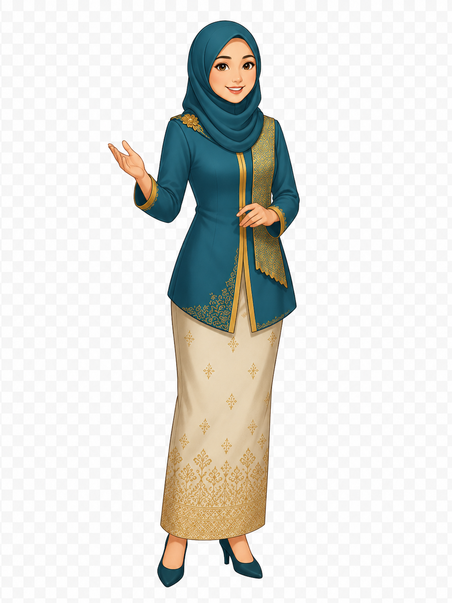

In this unit, you will practise responding to an opposing argument and giving a clear rebuttal about local culture and digital media.
Write short notes before speaking. Focus on responding to the opposing view. Do not write a full script.
Listen to the moderator audio instruction before preparing and recording your rebuttal.
Watch the moderator video instruction before entering the rebuttal practice session.
Young people can preserve local culture better through digital media than through traditional community events.

Some people argue that traditional community events are still the best way to preserve local culture because they allow young people to experience cultural values directly, not only through screens.
Use this structure to respond politely and clearly:
Record your rebuttal here. Focus on responding politely, logically, and clearly.
Later, this section can be connected to AI-driven feedback. For now, students can use the checklist below after speaking.